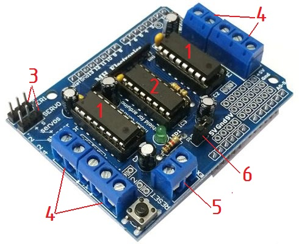
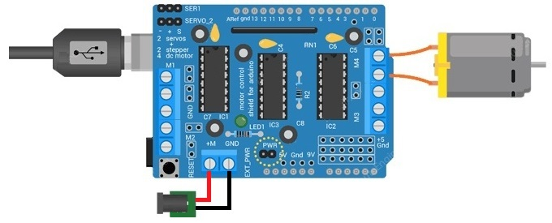
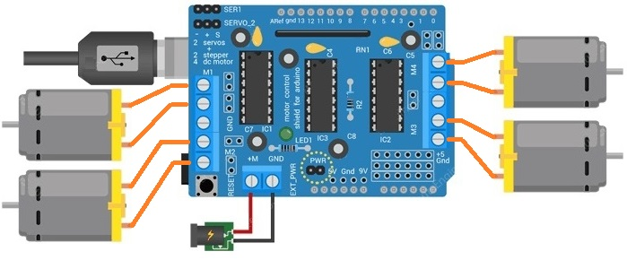
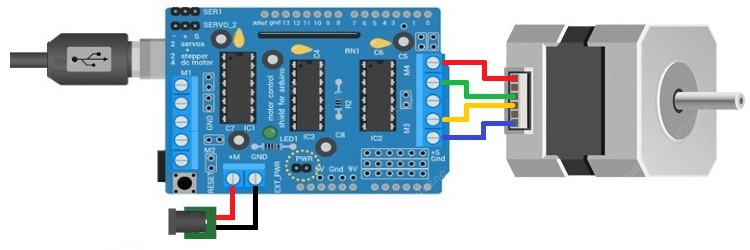
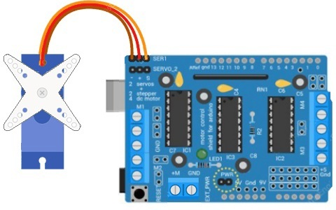

4-х канальный драйвер электродвигателей
Motor Shield L293D
Один из самых простых и недорогих способов управления электродвигателями - это воспользоваться Motor Shield на базе L293D, который можно легко установить на плату Arduino UNO.

- Микросхемы L293D.
- Микросхема 74HC595.
- Выводы для подключения сервоприводов.
- Клемма для подключения электродвигателей (M1, M2, M3, M4).
- Клемма «EXT_PWR», через которые можно запитать шилд, т.к. для работы моторов необходимо большее напряжение, чем напряжение от Arduino.
- Перемычка «PWR», отвечающая за питание шилда.
Для питания Motor Shield L293D иным источником необходимо снять перемычку,
которая обозначена "PWR".
Motor Shield L293D построен на микросхеме L293D, состоящая из двух H-мост (H-Bridge), с помощью которых можно управлять двумя постоянными двигателями или одним шаговым двигателем. Каждый канал рассчитан на 0,6 А с пиком 1,2 А. Так как на Motor Shield L293D установлено две микросхемы L293D, можно управлять сразу четырьмя двигателями постоянного тока. Так же, на Motor Shield L293D установлена микросхема 74HC595, которая расширяет 4 цифровых контакта Arduino до 8 управляющих контактов двух микросхем L293D.
Основные технические параметры Motor Shield L293D:
- 4-х канальное управление.
- Напряжение питания двигателей — 5...36 В.
- Напряжение питания платы — 5 В.
- Допустимый ток нагрузки — 600 мА на канал.
- Максимальный (пиковый) ток нагрузки — 1,2 А на канал.
- Размер платы — 70×54×20 мм.
- Защита от перегрева
- Контакт для дополнительного питания платы
На Motor Shield L293D находится светодиод, который светится только тогда, когда подсоединенные электромоторы запитаны. Если светодиод не светится, то электромоторы работать не будут, так как источника питания не хватает на работу моторов или его совсем нет.
Питание Motor Shield L293D можно осуществить двумя способами:
- Общий источник питания для Arduino и двигателей (максимальное напряжение 12 В) — можно использовать один источник питания, используется разъем DC на Arduino UNO или 2-х контактный разъем «EXT_PWR», так же необходимо установить перемычку «PWR».
- Раздельный источник питания — рекомендуется отдельно питать Arduino и шилд, для этого Arduino подключаем к USB, а двигатели подключаем к источнику постоянного тока, используя разъем «EXT_PWR». Необходимо убрать перемычку перемычку «PWR».
Внимание! Нельзя подавать питание на «EXT_PWR» выше 12 В при установленной перемычке «PWR».
Выходные контакты двух микросхем L293D выведены по бокам с помощью 5-ти контактных винтовых клемм, а именно М1, М2, М3 и М4. К этим контактам подключается четыре двигателя постоянного тока и два шаговых двигателя.
Так же, на shield выведен два 3-х контактных разъема, которым можно подключить два сервопривода.
Цифровые контакты D2 и D13 и аналоговые контакты A0-A5 не используются.
Для удобной работы с Motor shield L293D необходимо установить библиотеку «AFMotor.h».
Скачать библиотеку «AFMotor.h»
Подключение к Arduino двигателя постоянного тока
с помощью Motor shield L293D
Необходимые детали:
- Arduino UNO R3 — 1 шт.
- Блок питания 12В, 2А — 1 шт.
- Кабель USB 2.0 A-B — 1 шт.
- Двигатель постоянного тока — 1шт.
- Motor shield L293D — 1шт.
Устанавливаем shield сверху Arduino, далее подключаем источник питания к клеммам «EXT_PWR», в примере используется источник питания на 9 В. Затем подключаем двигатели к клеммам М4.

В скетче №1 показано, как управлять скоростью и направлением движении двигателями постоянного тока
Скетч №1
#include <AFMotor.h>// Подключаем библиотеку AFMotor AF_DCMotor motor(4); // Указываем какому порту подключен двигатель (1-4) void setup() { motor.setSpeed(200); // Начальная скорость вращения motor.run(RELEASE); // Останавливаем двигатель } void loop() { uint8_t i; // Создаем переменную "i" motor.run(FORWARD); // Вращение двигателя вперед for (i=0; i<255; i++) // Ускоряем двигатель от 0 до 255 { motor.setSpeed(i); // Отправка скорости delay(10); // Пауза } for (i=255; i!=0; i--) // Замедляем двигатель от 255 до 0 { motor.setSpeed(i); // Отправка скорости delay(10); // Пауза } motor.run(BACKWARD); // Вращение двигателя назад for (i=0; i<255; i++) // Ускоряем двигатель от 0 до 255 { motor.setSpeed(i); // Отправка скорости delay(10); // Пауза } for (i=255; i!=0; i--) // Замедляем двигатель от 255 до 0 { motor.setSpeed(i); // Отправка скорости delay(10); // Пауза } motor.run(RELEASE); // Останавливаем двигатель delay(1000); // Пауза }
Скетч начитается с подключением библиотеки «AFMotor.h.», затем создаем объект «AF_DCMotor motor(4);» в котором указываем номер порта двигателя (M1, M2, M3, M4). Если необходимо подключить несколько двигателей, создайте отдельный объект «AF_DCMotor motor1(1);» и так далее.
В «void setup» мы вызываем функции «setSpeed(speed)» в которой задаем скорость двигателя, от 0 до 255 и функцию «motor.run» направление вращения двигателя, где «FORWARD» — вперед, «BACKWARD» — назад, «RELEASE» — остановка.

Ниже приведен пример (Скетч №2) управления четыремя двигателями постоянного тока.
Скетч №2
#include <AFMotor.h> // Подключаем библиотеку AFMotor int i; AF_DCMotor motor1(1); // Подключаем моторы к клеммникам M1 AF_DCMotor motor2(2); // Подключаем моторы к клеммникам M2 AF_DCMotor motor3(3); // Подключаем моторы к клеммникам M3 AF_DCMotor motor4(4); // Подключаем моторы к клеммникам M4 void setup() { motor1.setSpeed(255);// Задаем максимальную скорость вращения моторов motor1.run(RELEASE); motor2.setSpeed(255); motor2.run(RELEASE); motor3.setSpeed(255); motor3.run(RELEASE); motor4.setSpeed(255); motor4.run(RELEASE); } void loop() { motor1.run(FORWARD); motor1.setSpeed(255); motor2.run(FORWARD); motor2.setSpeed(255); motor3.run(FORWARD); motor3.setSpeed(255); motor4.run(FORWARD); motor4.setSpeed(255); delay(3000); //Указываем время движения motor1.run(RELEASE); // Останавливаем двигатели motor2.run(RELEASE); motor3.run(RELEASE); motor4.run(RELEASE); delay(500); // Указываем время задержки motor1.run(BACKWARD); // Задаем движение назад motor1.setSpeed(255); // Задаем скорость движения motor2.run(BACKWARD); motor2.setSpeed(255); motor3.run(BACKWARD); motor3.setSpeed(255); motor4.run(BACKWARD); motor4.setSpeed(255); delay(3000); // Указываем время движения motor1.run(RELEASE); // Останавливаем двигатели motor2.run(RELEASE); motor3.run(RELEASE); motor4.run(RELEASE); }
Подключение к Arduino шагового двигателя
с помощью Motor shield L293D
Необходимые детали:
- Arduino UNO R3 — 1 шт.
- Блок питания 12В, 2А — 1 шт.
- Кабель USB 2.0 A-B — 1 шт.
- Шаговый двигатель — 1шт.
- Motor shield L293D — 1шт.
Рассмотрим подключение шагового двигателя, который рассчитан на 12 В (и выше) и делает 200 шагов на оборот. Подключите шаговый двигатель к клеммам M3 и M4 (рис. 3). Затем подключите внешний источник питания 12 В к разъему «EXT_PWR«. Не забудьте удалить перемычку PWR.

Код для управления шаговым двигателем с помощью Motor Shield L293D приведен в скетче №3.
Скетч №3
#include <AFMotor.h>// Подключаем библиотеку AFMotor AF_Stepper motor(200, 2); // 200 - количество шагов на 1 оборот двигателя //2- двигатель подключен к порту №2 (М3-М4) void setup() { motor.setSpeed(50); // Скорость двигателя в минуту } void loop() { motor.step(300, FORWARD, SINGLE); motor.step(300, BACKWARD, SINGLE); motor.step(300, FORWARD, DOUBLE); motor.step(300, BACKWARD, DOUBLE); motor.step(300, FORWARD, INTERLEAVE); motor.step(300, BACKWARD, INTERLEAVE); motor.step(300, FORWARD, MICROSTEP); motor.step(300, BACKWARD, MICROSTEP); }
Скетч начинается с подключением библиотеки «AFMotor.h».
Во второй строке создаем объект «AF_Stepper motor(200, 2);», где указываем количество шагов на оборот и номер порта.
В разделе настройки, функцией «motor.setSpeed(50);» устанавливает скорость двигателя, где «50» количество оборотов в минуту.
В разделе цикла программы вызываем функции для управления скоростью и направлением вращения двигателя:
- 300 — количество шагов.
- FORWARD, BACKWARD — направления вращение двигателем.
- SINGLE — активация одной обмотки двигателя для совершения шага.
- DOUBLE — активация двух обмоток двигателя, что обеспечивает больший вращающий момент
- INTERLEAVE — применение ШИМ для управления шаговым двигателем двигателем.
Подключение к Arduino сервопривода
с помощью Motor shield L293D
Необходимые детали:
- Arduino UNO R3 — 1 шт.
- Блок питания 12В, 2А — 1 шт.
- Кабель USB 2.0 A-B — 1 шт.
- Сервопривод— 1шт.
- Motor shield L293D — 1шт.
На Motor shield L293D выведен 16-разрядные контакты Arduino 9 и 10, питание для сервоприводов подается от 5 вольтного стабилизатора Arduino, поэтому подключать дополнительное питание в разъем «EXT_PWR» не нужно.

Код для управления сервоприводом с помощью Motor Shield L293D приведен в скетче №4. Так как используется стандартный вывод, используем стандартную библиотеку Servo.
Скетч №4
#include <Servo.h> // Подключаем библиотеку Servo Servo myservo; // Создаем объект int pos = 0; // Создаем переменную void setup() { myservo.attach(10); // Указываем к какому порту подключен вывод сервопривода } void loop() { { for(pos = 0; pos <= 180; pos += 1) // Увеличиваем угол от 0 до 180 { myservo.write(pos); // Передаем данные delay(15); // Пауза } for(pos = 180; pos>=0; pos-=1) // Уменьшаем угол от 180 до 0 { myservo.write(pos); // Передаем данные delay(15); // Пауза } }
Источники
robotchip.ru - Обзор motor shield l293d
helpduino.ru - Подключение Motor Shield L293D к плате Arduino и управление электромоторами